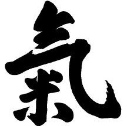

Shinshin Toitsu Aikido
search:
×
Taigi 1 Katatetori
Katatetori - Tenkan Kokyunage
Katatetori - Kirikaeshi Zenponage
Katatetori - Zenponage
Katatetori - Tenkan Kaitennage
Katatetori - Shihonage
Katatetori - Tenkan Ikkyo
Taigi 2 Katatetori Ryotemochi
Katatetori Ryotemochi - Kokyunage Tobikomi
Katatetori Ryotemochi - Kokyunage En Undo
Katatetori Ryotemochi - Kokyunage Hachinoji
Katatetori Ryotemochi - Zenponage
Katatetori Ryotemochi - Nikyo
Katatetori Ryotemochi - Koteoroshi
心身統一合氣道

text index:
Shinshin_Toitsu_Aikido.txt
aiki.info
discussion group